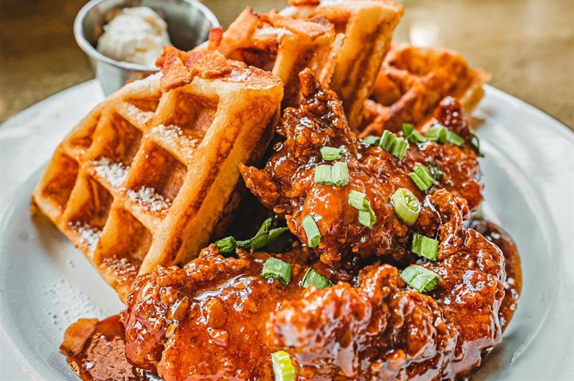

Chicken & Waffles
Description
Chicken and waffles typically consist of crispy fried chicken pieces served on top of freshly made waffles. The chicken is seasoned with a blend of spices and buttermilk for tender and flavorful results. The waffles are soft, with a slight crispness on the outside and a warm, fluffy interior, often enhanced with a touch of sweetness. The dish is usually served with butter and maple syrup, which adds a perfect balance of sweet and savory to every bite.
Ingredients for the fried chosen:
- 2 lbs (about 1 kg) chicken pieces (bone-in, skin-on preferred)
- 1 cup buttermilk
- 1 1/2 cups all-purpose flour
- 1 teaspoon salt
- 1 teaspoon black pepper
- 1 teaspoon paprika
- 1/2 teaspoon garlic powder
- 1/2 teaspoon onion powder
- 1/4 teaspoon cayenne pepper (adjust to your preferred spice level)
- Vegetable oil, for frying
Ingredients for the waffles:
- 2 cups all-purpose flour
- 2 tablespoons granulated sugar
- 1 tablespoon baking powder
- 1/2 teaspoon salt
- 1 3/4 cups milk
- 1/3 cup vegetable oil
- 2 large eggs
- 1 teaspoon vanilla extract
Steps
- Marinate the chicken: In a large bowl, mix the buttermilk with a pinch of salt and pepper. Add the chicken pieces and coat them evenly with the buttermilk mixture. Cover the bowl with plastic wrap and refrigerate for at least 1 hour (or overnight) to allow the flavors to develop.
- Prepare the waffle batter: In a separate mixing bowl, whisk together the flour, sugar, baking powder, and salt. In another bowl, whisk the milk, vegetable oil, eggs, and vanilla extract. Pour the wet ingredients into the dry ingredients and mix until just combined. Do not overmix; a few lumps are fine. Let the batter rest for about 5 minutes.
- Cook the chicken: In a large, deep skillet or a deep fryer, heat the vegetable oil to 350°F (175°C). In a shallow dish, mix the all-purpose flour, salt, black pepper, paprika, garlic powder, onion powder, and cayenne pepper for the coating. Take each marinated chicken piece, letting excess buttermilk drip off, and coat it thoroughly with the seasoned flour mixture. Fry the chicken in batches for about 12-15 minutes or until the internal temperature reaches 165°F (74°C) and the chicken is golden and crispy. Drain the fried chicken on a wire rack or paper towels.
- Cook the waffles: Preheat your waffle maker according to the manufacturer's instructions. Pour the appropriate amount of waffle batter onto the hot waffle maker and cook until golden and crispy. Repeat until all the batter is used.
- Serve: Place a crispy fried chicken piece on top of a warm waffle. Add a pat of butter on the chicken, drizzle with maple syrup, and serve immediately.
Enjoy your delicious homemade chicken and waffles! The combination of crunchy chicken, fluffy waffles, and the perfect blend of sweet and savory flavors will surely make this a meal to remember.